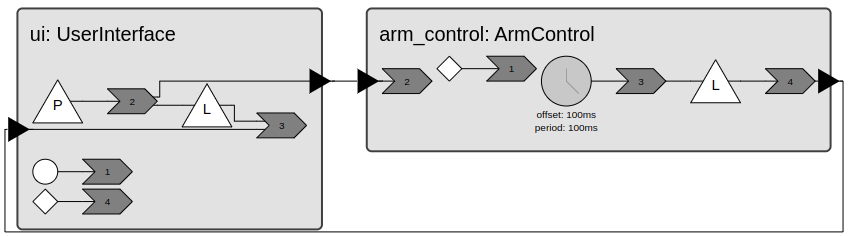
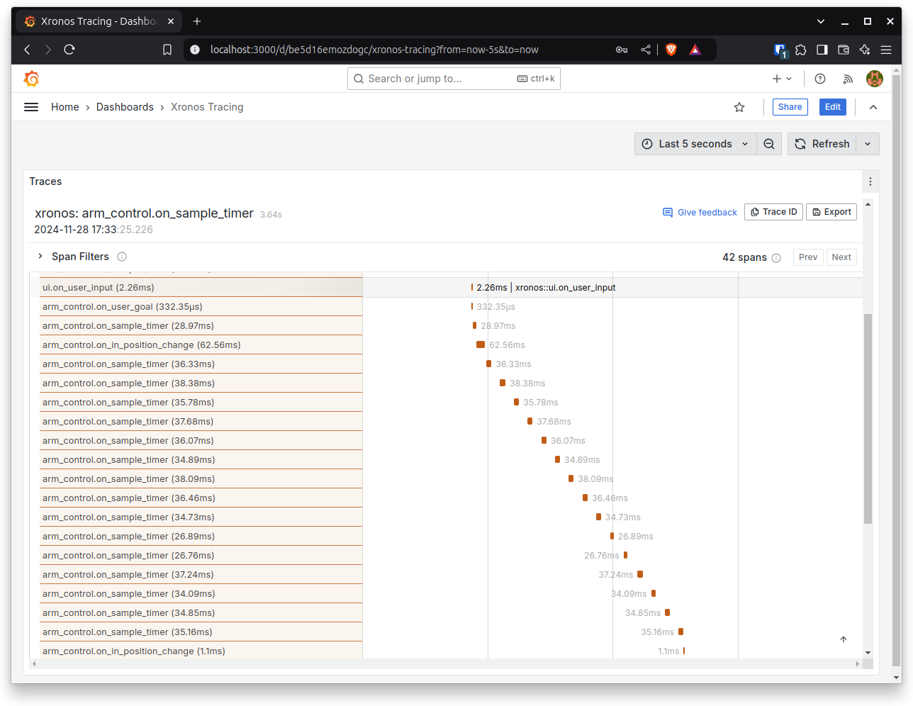

Yahboom Robot Arm Controller
Yahboom DOFBOT AI Vision Robotic Arm is 6 degree-of-freedom robotic arm controlled by a Jetson Nano. In this tutorial, you will see how a robotic arm controller can be implemented using xronos.
{kind=link}
Image of DOFBOT-6 from Yahboom Technology / retrieved from https://github.com/YahboomTechnology/dofbot-jetson_nano/blob/master/DOFBOT.jpg / No copyright or licensing information was provided
{kind=link}
Prerequisites
To run the code provided in this tutorial you will need a Yahboom DOFOT robot arm which can be purchased here. The robot arm includes an NVIDIA Jetson Nano which must be configured with Ubuntu 22.04. Documentation for installing Ubuntu 22.04 is found here. Alternatively, the code should also work with Raspberry Pi but this has not been tested.
Cloning repo and installing dependencies
Note
This section assumes that you are logged onto the NVIDIA Jetson Nano on the Yahboom DOFBOT.
Begin by cloning the xronos repository and navigate to the robot arm controller example:
$ git clone https://github.com/xronos/xronos.git
$ cd xronos/examples/robot-arm
Set up a virtual environment and install xronos, see Installation for instructions.
Install the Python dependencies:
$ pip install -r requirements.txt
Overview
The following diagram shows the layout of the program.

The ArmControl reactor is driven by a periodic timer with a 100 ms period and accepts new trajectories on its input port from
the UserInterface reactor. When the final pose of a trajectory is reached, the ArmControl reactor notifies the
UserInterface that it can accept a new trajectory.
Run the program and give the controller a trajectory:
$ python arm.py
$ > moveto green yellow init
The robot should follow a trajectory from the initial pose to the green field, followed by the yellow field and back to the initial pose.
In the following, we will take a closer look at the two reactors.
UserInterface reactor
Open user_interface.py. The UserInterface reactor is an example of a generic reusable reactor. It declares four
elements. Two ports, a programmable timer, and a physical event. A PhysicalEvent is useful for sending events to
the xronos runtime from external contexts such as a thread. In the __init__ method we initialize class variables
including a thread and a semaphore.
def __init__(
self, blocking: bool, parser: Callable[[str], T | None | KeyboardInterrupt]
):
super().__init__()
self.blocking = blocking
self.parser = parser
self.stop_thread_event = threading.Event()
self.thread = threading.Thread(
target=self.run_user_input_thread, args=(self.stop_thread_event,)
)
self.semaphore = threading.Semaphore(value=0)
The thread is not started until the startup reaction. This ensures that the xronos runtime runs before the thread calls any of the xronos APIs.
@xronos.reaction
def on_startup(self, interface: xronos.ReactionInterface) -> Callable[[], None]:
"""Start the thread listening for console input."""
interface.add_trigger(self.startup)
def handler() -> None:
# Print out the help message on startup.
self.parser("help")
self.thread.start()
return handler
The thread reads a user command from stdin and schedules it via the physical event. The thread will then acquire a
semaphore before reading the next command.
def run_user_input_thread(self, stop_event: threading.Event) -> None:
"""Listen for console input and schedule the next user input action.
This function will run in a separate thread. After receiving an input
it will block until the semaphore is released by the runtime.
"""
while not stop_event.is_set():
cmd = input("> ")
self._user_input.trigger(cmd)
self.semaphore.acquire()
The physical events encapsulating the commands from stdin are handled by a reaction that parses the commands with a supplied
function and writes recognized commands to the output port. The UserInterface reactor can be configured as
blocking, in which case it will wait for an event on its input port before releasing the semaphore and allowing the
external thread to read more commands from the console. If it is non-blocking it will schedule the release of the
semaphore at once.
@xronos.reaction
def on_user_input(self, interface: xronos.ReactionInterface) -> Callable[[], None]:
"""Parse the user input and output any parsed command on the output port."""
user_input_trigger = interface.add_trigger(self._user_input)
output_effect = interface.add_effect(self.output)
unblock_effect = interface.add_effect(self._unblock)
def handler() -> None:
cmd = self.parser(user_input_trigger.get())
if isinstance(cmd, KeyboardInterrupt):
self.environment.request_shutdown()
elif cmd:
output_effect.set(cmd)
if not cmd or not self.blocking:
# If the user interface is non-blocking, schedule an unblock event.
unblock_effect.schedule(value=None)
return handler
ArmControl reactor
Open arm.py. The ArmControl reactor declares several reactor elements. An input port new_trajectory for accepting
new trajectories from the user or a planner, a periodic timer _sample_timer for sampling the servos, a programmable timer
_in_position for detecting changes to the servo states, and finally an output port trajectory_completed for
notifying the user, or planner, that the trajectory was completed.
Upon receiving a new trajectory on the input port we update the internal state of ArmControl.
@xronos.reaction
def on_new_trajectory(
self, interface: xronos.ReactionInterface
) -> Callable[[], None]:
new_trajectory_trigger = interface.add_trigger(self.new_trajectory)
def handler() -> None:
self.trajectory = new_trajectory_trigger.get()
next_pose = self.trajectory.next_pose()
if self.verbose:
print(f"Received trajectory, setting next_pose={next_pose}")
if next_pose:
self.goal = next_pose
return handler
In response to timer events, the position of each servo is read through self.read_pose(). When a servo is within some
small delta angle from its desired position, it is said to be in-position. The reaction schedules a programmable timer if
in-position changes.
@xronos.reaction
def on_sample_timer(
self, interface: xronos.ReactionInterface
) -> Callable[[], None]:
interface.add_trigger(self._sample_timer)
in_position_effect = interface.add_effect(self._in_position)
# update position and schedule action if state of in_position changes
def handler() -> None:
self.read_pose()
in_position = self.in_position()
distance = Pose.delta(self.goal, self.position)
if self.verbose:
print(f"Distance: {distance}")
if in_position != self.was_in_position:
self.was_in_position = in_position
in_position_effect.schedule(in_position)
return handler
When in-position changes one out of three things can happen. If the robot is not in-position, a new command is sent to the servo actuators to drive the robot to in-position. If the robot is in-position, it has either arrived at an intermediate pose of its trajectory, in which case it updates the current goal to the next pose, or it has completed its trajectory, in which case it writes to the output port to notify the user.
@xronos.reaction
def on_in_position_change(
self, interface: xronos.ReactionInterface
) -> Callable[[], None]:
in_position_trigger = interface.add_trigger(self._in_position)
trajectory_completed_effect = interface.add_effect(self.trajectory_completed)
def handler() -> None:
if not in_position_trigger.get():
if self.verbose:
print(f"Goal distance: {(Pose.delta(self.goal, self.position))}")
self.goal.validate()
for actuator, pos_deg in self.goal.positions.items():
self.move_actuator(actuator, pos_deg)
else:
# Currrent pose goal reached. Check if more poses are in the trajectory.
next_pose = self.trajectory.next_pose()
if next_pose:
self.goal = next_pose
else:
trajectory_completed_effect.set(True)
return handler
Running the program
Run the application:
$ python arm.py
A command line interface is provided by the UserInterface reactor, type help for more info:
$ > help
CLI to robot arm controller. Commands: help, moveto [<green/red/blue/yellow/init> ...]. Exit with `exit` or Ctrl+C
To move the robot, provide a trajectory, e.g.:
$ > moveto red yellow green init
On-device tracing
The Xronos Dashboard can provide invaluable runtime observability into the program. Bring it up on the Jetson by following the instructions in Trace Dashboard. Then start the robot arm with tracing enabled.
$ python arm.py --trace
There are now two options for viewing the dashboard. If you are within a desktop environment on the Jetson, either
through a remote desktop, or by connecting a monitor and a keyboard directly to the Jetson, then you can simply point the
web browser to localhost:3000 as explained in Trace Dashboard. If you only have an SSH connection to the Jetson you
can point the browser on your host computer to JETSON_IP_ADDR:3000 where JETSON_IP_ADDR is the IP address or
hostname of the Jetson.
The trace viewer should look something like this.

Observe that ui.on_user_input reaction executes and triggers arm_control.on_user_goal which updates the current goal
pose. In the following execution of arm_control.on_sample_timer the change in in-position is detected, and an internal
event is scheduled which triggers new commands to the servos.